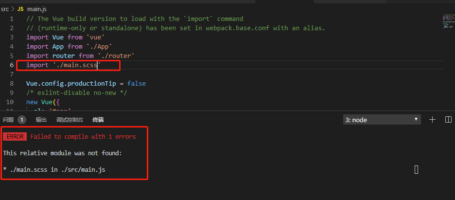

当我们在src目录下创建.scss文件，并在main.js中引用，运行时会报：
ERROR Failed to compile with 1 errors 5:25:07 PM
This relative module was not found:
* ./main.scss in ./src/main.js
如图所示

解决方法：
新版本的vue-cli已经帮我们把sass-loader配置好了，放在util.js里面了
前面我们通过 cnpm i node-sass sass-loader -D 安装好了scss依赖
并在build文件夹下的webpack.base.conf.js的rules里面添加了如下配置
{
现在不需要这样配置。如果这样配置会报错，因为配置重复了。
只需将此配置删除即可